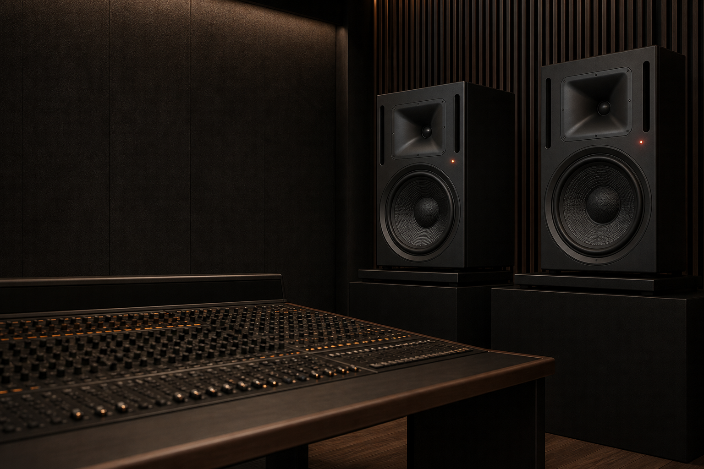
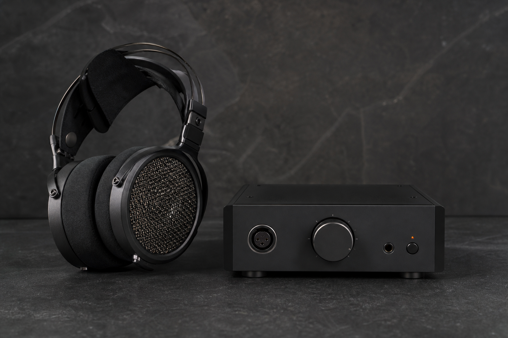

Sound, made
accountable.
Reference systems, foundational audio technology and rooms designed for decisions that last.

One standard. Seven systems.

Tools for listening closely.
Neutral voicing, serviceable construction and low-noise conversion for engineers, musicians and serious listeners.
Explore ReferenceFrom transducer to room.
We design and align every part of the chain—electronics, software, calibration and space—so your decisions translate everywhere.
Professional Audio
Monitoring, conversion and control for recording, broadcast and post-production.
→ 02Reference Products
Neutral, serviceable listening tools for engineers, musicians and serious listeners.
→ 03IP & Licensing
DSP, spatial, transducer-control and room-correction technology for device manufacturers.
→ 04Studio Design
Recording and critical-listening rooms—from feasibility to commissioning.
→ 05Acoustics Consulting
Performance venues, automotive, hospitality and noise-sensitive spaces.
→Research that
earns its place.
Surrey leads long-horizon acoustic science. California turns it into dependable products and integrations.

Adaptive room inference
Low-power spatial rendering
Perceptual codec research